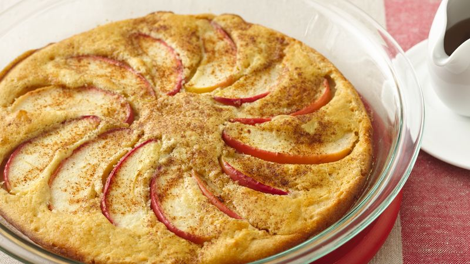

Apple Oven-Baked Pancake

Delicious apple pie!
No flipping needed! A family-size oven pancake is ready to eat in just 30 minutes.
Ingredients:
- 2 tablespoons butter or margarine
- 1 egg
- 3/4 cup Fiber One™ Complete pancake mix (from 28.3-oz box)
- 1/2 cup milk
- 1/4 teaspoon vanilla
- 1 small apple, very thinly sliced
- 1 1/2 teaspoons cinnamon-sugar
- Maple-flavored syrup, if desired
Steps:
- Heat oven to 400°F. While oven is heating, melt butter in 9-inch glass pie plate in oven.
- Meanwhile, in small bowl, beat egg with wire whisk or egg beater. Beat in pancake mix, milk and vanilla. Pour over melted butter in pie plate. Arrange apple slices on batter. Sprinkle with cinnamon-sugar.
- Bake 15 to 20 minutes or until edges are deep golden brown. Serve warm with maple syrup.